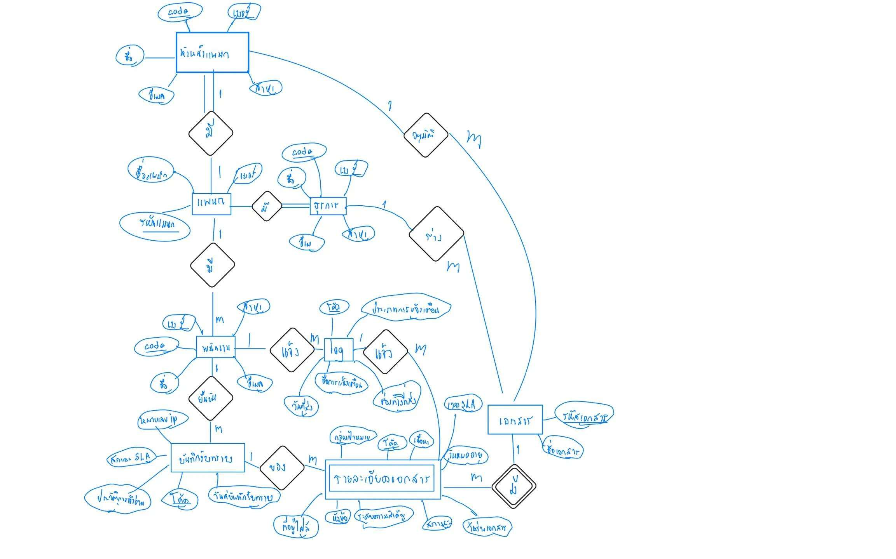
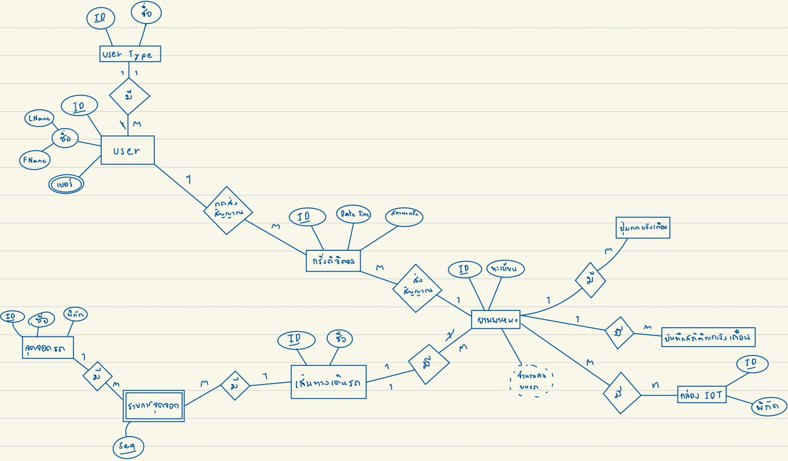

เอกสารประกอบการสอบชิ้นงานโครงงานวิชา Database Systems — สรุปโครงสร้างตาราง ความสัมพันธ์ และ PL/SQL ของ Business Domain ทั้ง 2 งาน (อ.ประพจน์ — Business Analysis และ อ.วรางคณา — Software Engineering)
ทั้งสองงานอยู่ร่วมกันบน DB User เดียวกัน (SQL_S2_11 บน Oracle) รวม 18 ตาราง — ตรวจแล้วว่าไม่มีชื่อตาราง / Constraint / Procedure ซ้ำกันเลย จึงไม่มีข้อขัดแย้งใด ๆ และไฟล์ DROP ของแต่ละงานแยกขอบเขตกันชัดเจน
ระบบจัดการอนุมัติ แจ้งเตือน และรับทราบเอกสารภายในองค์กร
(Document Approval, Notification & Acknowledgment System) — ครอบคลุมการร่างเอกสารโดยธุรการ → อนุมัติโดยหัวหน้าแผนก → แจ้งเตือนพนักงาน → บันทึกผลรับทราบตามเกณฑ์ SLA
8 เอนทิตี (Strong 7 + Weak 1) · วิชา Business Analysis and Process Management
ระบบขนส่งสาธารณะอัจฉริยะ
(Smart Transit / Smart Bus System) — ผสานการทำงานระหว่างผู้โดยสาร เส้นทางเดินรถ ยานพาหนะ กริ่งดิจิตอล ปุ่มฉุกเฉิน และอุปกรณ์ IoT ติดรถ
10 เอนทิตี (Strong 9 + Weak 1) · วิชา Software Engineering
แผนภาพ ER เขียนด้วยสัญลักษณ์ Chen Notation — วางไว้บนสุดเพื่อใช้เป็นฐานอ้างอิงเวลากลับมาดูโครงสร้างตารางด้านล่าง

| เอนทิตีใน ER | ประเภท | ตารางใน Oracle | หมายเหตุการแปลง |
|---|---|---|---|
| หัวหน้าแผนก | Strong | DEPARTMENT_HEAD | Multivalued (เบอร์, สาขา) เก็บเป็นคอลัมน์เดี่ยวของเบอร์/สาขาหลัก |
| แผนก | Strong | DEPARTMENT | เชื่อมกับหัวหน้าแบบ 1:1 ด้วย FK สองทาง (circular) |
| ธุรการ | Strong | ADMIN | — |
| พนักงาน | Strong | EMPLOYEE | — |
| เอกสาร | Strong | DOCUMENT | รวมความสัมพันธ์ "ร่าง" (ธุรการ) และ "อนุมัติ" (หัวหน้า) เป็น FK |
| รายละเอียดเอกสาร | WEAK | DOCUMENT_DETAIL | Identifying Relationship → เก็บ FK กลับเอกสารแม่ (doc_code) |
| log (ประวัติแจ้งเตือน) | Strong | LOG | ทำหน้าที่ตารางเชื่อม พนักงาน ↔ รายละเอียดเอกสาร |
| บันทึกรับทราบ | Strong | RECEIPT_RECORD | เก็บหลักฐาน IP + เวลา + ผลเทียบ SLA |
| คอลัมน์ | ชนิดข้อมูล | Constraints | คำอธิบาย |
|---|---|---|---|
| dept_code | VARCHAR2(10) | PK | รหัสแผนก เช่น DEPT-01 |
| dept_name | VARCHAR2(100) | NOT NULL | ชื่อแผนก เช่น ฝ่ายเทคโนโลยีสารสนเทศ |
| phone | VARCHAR2(20) | — | เบอร์ติดต่อแผนก (ใน ER เป็น Multivalued → เก็บเบอร์หลักเบอร์เดียว) |
| branch | VARCHAR2(100) | — | สาขาที่ตั้ง (เช่น สำนักงานใหญ่ สาขาอโศก) |
| head_code | VARCHAR2(10) | FK → DEPARTMENT_HEAD(code) | หัวหน้าแผนกประจำ — เพิ่มด้วย ALTER TABLE หลังสร้างตารางทั้งคู่แล้ว |
| คอลัมน์ | ชนิดข้อมูล | Constraints | คำอธิบาย |
|---|---|---|---|
| code | VARCHAR2(10) | PK | รหัสหัวหน้าแผนก เช่น DH-001 |
| name | VARCHAR2(100) | NOT NULL | ชื่อ-นามสกุล |
| position | VARCHAR2(100) | — | ตำแหน่ง เช่น ผู้จัดการฝ่ายไอที |
| branch | VARCHAR2(100) | — | สาขาที่ดูแล (Multivalued ใน ER) |
| phone | VARCHAR2(20) | — | เบอร์โทรติดต่อ (Multivalued ใน ER) |
| dept_code | VARCHAR2(10) | FK → DEPARTMENT(dept_code) | แผนกที่สังกัด / ดูแล |
| คอลัมน์ | ชนิดข้อมูล | Constraints | คำอธิบาย |
|---|---|---|---|
| code | VARCHAR2(10) | PK | รหัสธุรการ เช่น AD-001 |
| name | VARCHAR2(100) | NOT NULL | ชื่อ-นามสกุล |
| position | VARCHAR2(100) | — | ตำแหน่ง เช่น เจ้าหน้าที่ธุรการอาวุโส |
| branch | VARCHAR2(100) | — | สาขาที่ปฏิบัติงาน |
| phone | VARCHAR2(20) | — | เบอร์โทรติดต่อ |
| dept_code | VARCHAR2(10) | FK → DEPARTMENT(dept_code) | แผนกที่สังกัด (ธุรการประจำแผนก) |
| คอลัมน์ | ชนิดข้อมูล | Constraints | คำอธิบาย |
|---|---|---|---|
| code | VARCHAR2(10) | PK | รหัสพนักงาน เช่น EMP-001 |
| name | VARCHAR2(100) | NOT NULL | ชื่อ-นามสกุล |
| position | VARCHAR2(100) | — | ตำแหน่งงาน |
| branch | VARCHAR2(100) | — | สาขาที่ปฏิบัติงาน (Multivalued ใน ER) |
| phone | VARCHAR2(20) | — | เบอร์โทร (Multivalued ใน ER) |
| dept_code | VARCHAR2(10) | FK → DEPARTMENT(dept_code) | แผนกที่สังกัด |
| คอลัมน์ | ชนิดข้อมูล | Constraints | คำอธิบาย |
|---|---|---|---|
| doc_code | VARCHAR2(20) | PK | รหัสเอกสาร เช่น DOC-2026-001 |
| title | VARCHAR2(255) | NOT NULL | ชื่อเอกสาร / ชื่อเรื่อง |
| approved_by | VARCHAR2(10) | FK → DEPARTMENT_HEAD(code) | หัวหน้าแผนกผู้พิจารณาอนุมัติ (ความสัมพันธ์ "อนุมัติ" 1:M) |
| created_by | VARCHAR2(10) | FK → ADMIN(code) | ธุรการผู้ร่างเอกสาร (ความสัมพันธ์ "ร่าง" 1:M) |
| คอลัมน์ | ชนิดข้อมูล | Constraints | คำอธิบาย |
|---|---|---|---|
| code | VARCHAR2(10) | PK (Partial Key) | รหัสรายละเอียด เช่น DD-001 — คอลัมน์ "โค้ด" ของ Weak Entity |
| doc_code | VARCHAR2(20) | NOT NULL FK → DOCUMENT | เอกสารแม่ที่รายละเอียดนี้สังกัด (Identifying Relationship) |
| subject | VARCHAR2(255) | — | หัวข้อ/เนื้อหาส่วนนี้ของเอกสาร |
| priority | VARCHAR2(50) | — | ระดับความสำคัญ (ปกติ / สำคัญมาก / ด่วนมาก / ด่วนที่สุด) |
| target_group | VARCHAR2(100) | — | กลุ่มเป้าหมายที่ต้องรับทราบ |
| sender_code | VARCHAR2(10) | FK → ADMIN(code) | ธุรการผู้ส่งเอกสารฉบับนี้ |
| doc_date | DATE | — | วันที่ร่างเอกสาร |
| expire_date | DATE | — | วันหมดอายุ / กำหนดเส้นตายการรับทราบ (ใช้เทียบ SLA) |
| sla_limit | VARCHAR2(20) | — | เกณฑ์เวลา SLA เช่น "1 วัน", "3 วัน", "7 วัน" |
| month | VARCHAR2(20) | — | เดือนที่ออกเอกสาร (ใช้จัดกลุ่มรายงาน) |
| status | VARCHAR2(50) | — | สถานะ: รอยืนยัน / อนุมัติแล้ว / ไม่อนุมัติ / กำลังดำเนินการ / ปิดงานแล้ว |
| คอลัมน์ | ชนิดข้อมูล | Constraints | คำอธิบาย |
|---|---|---|---|
| code | VARCHAR2(10) | PK | รหัสบันทึกรับทราบ เช่น REC-001 |
| ip_address | VARCHAR2(45) | — | หมายเลข IP ของเครื่องที่กดรับทราบ (หลักฐานยืนยันตัวตน) |
| sla_limit | VARCHAR2(20) | — | เกณฑ์ SLA ณ ขณะรับทราบ |
| recipient_type | VARCHAR2(100) | — | ประเภทผู้รับ เช่น หัวหน้าส่วนงาน / ผู้จัดการฝ่าย |
| received_datetime | TIMESTAMP | — | วัน-เวลาที่กดยืนยันรับทราบ (ใช้เทียบกับ expire_date) |
| detail_code | VARCHAR2(10) | FK → DOCUMENT_DETAIL(code) | รายละเอียดเอกสารที่รับทราบ |
| confirmed_by | VARCHAR2(10) | FK → EMPLOYEE(code) | พนักงานผู้กดรับทราบ |
| คอลัมน์ | ชนิดข้อมูล | Constraints | คำอธิบาย |
|---|---|---|---|
| code | VARCHAR2(10) | PK | รหัส Log เช่น LOG-001 (สร้างอัตโนมัติโดย Procedure) |
| log_type | VARCHAR2(50) | — | ช่องทาง/ประเภทการแจ้งเตือน: System Alert / SMS Warning / Email Notification / Mobile Push (ER: Multivalued "ช่องทางที่ส่ง" → 1 แถวต่อ 1 ช่องทาง) |
| message_sent | VARCHAR2(255) | — | ข้อความสรุปที่ส่ง |
| notification_message | VARCHAR2(4000) | — | ข้อความแจ้งเตือนฉบับเต็ม |
| sent_datetime | TIMESTAMP | — | วัน-เวลาที่ส่งแจ้งเตือน |
| emp_code | VARCHAR2(10) | FK → EMPLOYEE(code) | พนักงานปลายทางที่ถูกแจ้ง |
| detail_code | VARCHAR2(10) | FK → DOCUMENT_DETAIL(code) | รายละเอียดเอกสารที่เกี่ยวข้อง |
SP_LOG_NOTIFICATION_SENT AUTONOMOUS_TRANSACTION OUT: o_log_codeบันทึกประวัติการแจ้งเตือนอัตโนมัติ — หัวใจของขั้นตอนที่ 3 ในวงจร
TestPLSQL.txt — ไฟล์สาธิตหน้างาน (BEFORE → EVENT → AFTER)รายงานการทำงานหลัก — เชื่อมทั้ง Master Tables และ Transaction Tables:
DOCUMENT ➜ DOCUMENT_DETAIL ➜ ADMIN(ผู้สร้าง) ➜ DEPARTMENT ➜ DEPARTMENT_HEAD(ผู้อนุมัติ) ➜ DEPARTMENT ➜ RECEIPT_RECORD(LEFT) ➜ EMPLOYEE(LEFT) ➜ DEPARTMENT(LEFT) ➜ LOG(LEFT)
ใช้ LEFT JOIN กับฝั่งรับทราบ/Log เพื่อรองรับเอกสารที่ยังไม่มีใครกดรับ — ถ้าใช้ INNER JOIN แถวพวกนั้นจะหล่นหาย
แผนภาพ ER เขียนด้วยสัญลักษณ์ Chen Notation — วางไว้บนสุดเพื่อใช้เป็นฐานอ้างอิงเวลากลับมาดูโครงสร้างตารางด้านล่าง

| เอนทิตีใน ER | ประเภท | ตารางใน Oracle | หมายเหตุการแปลง |
|---|---|---|---|
| user Type | Strong | USER_TYPES | ตาราง lookup ประเภทผู้ใช้ |
| user | Strong | USERS | เบอร์โทร (Multivalued) → เก็บเบอร์หลักเบอร์เดียว |
| กริ่งดิจิตอล | Strong | DIGITAL_BELLS | ตาราง Transaction หลักของระบบ |
| จุดจอดรถ | Strong | BUS_STOPS | พิกัดเก็บเป็น latitude / longitude แยกคอลัมน์ |
| รายการจุดจอด | WEAK | ROUTE_STOPS | แตก M:N ระหว่างเส้นทางกับจุดจอด + เก็บลำดับ (Seq) |
| เส้นทางเดินรถ | Strong | ROUTES | — |
| ยานพาหนะ | Strong | VEHICLES | "จำนวนคนบนรถ" เป็น Derived → เก็บเป็นค่า cache (passenger_count) |
| ปุ่มกดแจ้งเตือน | Strong | EMERGENCY_BUTTONS | ปุ่ม physical บนตัวรถ |
| บันทึกสถิติการแจ้งเตือน | Strong | ALERT_LOGS | ประวัติเหตุการณ์ฉุกเฉิน |
| กล่อง IOT | Strong | IOT_BOXES | ER ระบุ M:N กับรถ → ใช้งานจริง 1:1 (iot_id UNIQUE) |
| คอลัมน์ | ชนิดข้อมูล | Constraints | คำอธิบาย |
|---|---|---|---|
| user_type_id | VARCHAR2(10) | PK | รหัสประเภท เช่น UT-001 (ผู้ดูแลระบบ), UT-002 (พนักงานขับรถ), UT-003 (ผู้รับบริการ) |
| type_name | VARCHAR2(100) | NOT NULL | ชื่อประเภทผู้ใช้ |
| description | VARCHAR2(255) | — | คำอธิบายเพิ่มเติม |
| คอลัมน์ | ชนิดข้อมูล | Constraints | คำอธิบาย |
|---|---|---|---|
| user_id | VARCHAR2(20) | PK | รหัสผู้ใช้ เช่น U-1001 |
| first_name | VARCHAR2(100) | NOT NULL | ชื่อ (ER: Composite Attribute "ชื่อ" แตกเป็น FName) |
| last_name | VARCHAR2(100) | NOT NULL | นามสกุล (LName) |
| phone_number | VARCHAR2(20) | — | เบอร์โทร (ER: Multivalued วงรีสองชั้น → เก็บเบอร์หลักเบอร์เดียว) |
| VARCHAR2(100) | — | อีเมลผู้ใช้ | |
| user_type_id | VARCHAR2(10) | FK → USER_TYPES | ประเภทผู้ใช้ (ใช้เป็น Business Rule: กดกริ่งได้เฉพาะ UT-003) |
| status | VARCHAR2(20) | DEFAULT 'Active' | สถานะบัญชี |
| คอลัมน์ | ชนิดข้อมูล | Constraints | คำอธิบาย |
|---|---|---|---|
| route_id | VARCHAR2(20) | PK | รหัสสาย เช่น RT-01 |
| route_name | VARCHAR2(100) | NOT NULL | ชื่อสาย เช่น สาย 1: รอบมหาวิทยาลัย |
| description | VARCHAR2(255) | — | รายละเอียดเส้นทาง |
| start_time | VARCHAR2(8) | — | เวลาเริ่มให้บริการ |
| end_time | VARCHAR2(8) | — | เวลาสิ้นสุดให้บริการ |
| status | VARCHAR2(20) | DEFAULT 'Active' | สถานะสายเดินรถ |
| คอลัมน์ | ชนิดข้อมูล | Constraints | คำอธิบาย |
|---|---|---|---|
| stop_id | VARCHAR2(20) | PK | รหัสจุดจอด เช่น BS-01 |
| stop_name | VARCHAR2(100) | NOT NULL | ชื่อป้าย เช่น หน้าประตูใหญ่ (Main Gate) |
| latitude | NUMBER(10,6) | — | พิกัดละติจูด (ER: พิกัด) |
| longitude | NUMBER(10,6) | — | พิกัดลองจิจูด |
| description | VARCHAR2(255) | — | รายละเอียดเพิ่มเติม |
| คอลัมน์ | ชนิดข้อมูล | Constraints | คำอธิบาย |
|---|---|---|---|
| route_id | VARCHAR2(20) | PK (ร่วม) FK → ROUTES | เส้นทางที่ป้ายนี้อยู่ (PK เจ้าของ) |
| seq | NUMBER | PK (ร่วม — Partial Key) | ลำดับที่จอดในสายนั้น (ER: แอตทริบิวต์ Seq ขีดเส้นใต้) |
| stop_id | VARCHAR2(20) | FK → BUS_STOPS | จุดจอดที่ปรากฏในเส้นทาง |
| est_time_offset_min | NUMBER | — | เวลาโดยประมาณจากจุดเริ่มสาย (นาที) |
| note | VARCHAR2(255) | — | หมายเหตุ |
| คอลัมน์ | ชนิดข้อมูล | Constraints | คำอธิบาย |
|---|---|---|---|
| iot_id | VARCHAR2(20) | PK | รหัสกล่อง เช่น IOT-001 |
| latitude | NUMBER(10,6) | — | พิกัดล่าสุดจาก GPS (อัปเดตผ่าน Procedure) |
| longitude | NUMBER(10,6) | — | พิกัดลองจิจูดล่าสุด |
| firmware_version | VARCHAR2(50) | — | เวอร์ชันเฟิร์มแวร์ของกล่อง |
| network_type | VARCHAR2(50) | — | ชนิดเครือข่ายที่ใช้เชื่อมต่อ |
| status | VARCHAR2(20) | DEFAULT 'Active' | สถานะอุปกรณ์ |
| คอลัมน์ | ชนิดข้อมูล | Constraints | คำอธิบาย |
|---|---|---|---|
| vehicle_id | VARCHAR2(20) | PK | รหัสรถ เช่น VEH-01 |
| license_plate | VARCHAR2(20) | NOT NULL | เลขทะเบียน เช่น กข-1001 |
| vehicle_model | VARCHAR2(100) | — | รุ่น/แบบรถ |
| capacity | NUMBER | — | ความจุผู้โดยสารสูงสุด |
| passenger_count | NUMBER | DEFAULT 0 | จำนวนคนบนรถ — ER เป็น Derived Attribute (วงรีเส้นประ) → เก็บเป็นค่า cache อัปเดตผ่าน Procedure เท่านั้น |
| route_id | VARCHAR2(20) | FK → ROUTES | สายที่รถวิ่งประจำ |
| iot_id | VARCHAR2(20) | UNIQUE FK → IOT_BOXES | กล่อง IoT ประจำคัน (ER ระบุ M:N → ใช้งานจริง 1 คันต่อ 1 กล่อง) |
| driver_user_id | VARCHAR2(20) | FK → USERS | พนักงานขับรถผู้ประจำคัน |
| status | VARCHAR2(20) | DEFAULT 'Active' | สถานะพร้อมให้บริการ |
| คอลัมน์ | ชนิดข้อมูล | Constraints | คำอธิบาย |
|---|---|---|---|
| button_id | VARCHAR2(20) | PK | รหัสปุ่ม เช่น BTN-01 |
| vehicle_id | VARCHAR2(20) | FK → VEHICLES | รถที่ปุ่มติดตั้งอยู่ (1 คันมีได้หลายปุ่ม) |
| button_location | VARCHAR2(100) | — | ตำแหน่งติดตั้งบนรถ |
| status | VARCHAR2(20) | DEFAULT 'Active' | สถานะปุ่ม (Active / ชำรุด) |
| คอลัมน์ | ชนิดข้อมูล | Constraints | คำอธิบาย |
|---|---|---|---|
| bell_id | VARCHAR2(20) | PK | รหัสการกดกริ่ง เช่น BELL-001 (สร้างอัตโนมัติโดย Procedure) |
| date_time | TIMESTAMP | — | วัน-เวลาที่กดกริ่ง (ER: Date Time) |
| bell_status | VARCHAR2(50) | — | สถานะกริ่ง: รอดำเนินการ / รับทราบแล้ว / สำเร็จ / ยกเลิก |
| user_id | VARCHAR2(20) | FK → USERS | ผู้ใช้ที่กดกริ่ง (ความสัมพันธ์ "กดส่งสัญญาณ" 1:M) |
| vehicle_id | VARCHAR2(20) | FK → VEHICLES | รถคันที่ขอลง (ความสัมพันธ์ "ส่งสัญญาณ" M:1) |
| note | VARCHAR2(255) | — | หมายเหตุ |
| คอลัมน์ | ชนิดข้อมูล | Constraints | คำอธิบาย |
|---|---|---|---|
| log_id | VARCHAR2(20) | PK | รหัสบันทึก เช่น ALT-1001 |
| vehicle_id | VARCHAR2(20) | FK → VEHICLES | รถที่เกิดเหตุการณ์ |
| button_id | VARCHAR2(20) | FK → EMERGENCY_BUTTONS | ปุ่มที่ถูกกด |
| alert_time | TIMESTAMP | — | วัน-เวลาที่เกิดเหตุ ⚠️ เดิมชื่อ timestamp แต่ชนกับ datatype ของ PL/SQL (PLS-320 บน Oracle 10g) จึงเปลี่ยนชื่อ |
| status | VARCHAR2(20) | — | สถานะการจัดการเหตุการณ์ เช่น Completed |
| note | VARCHAR2(255) | — | หมายเหตุ |
sp_press_digital_bell — ผู้โดยสารกดกริ่งขอลงรถ OUT: o_bell_id, o_statussp_confirm_digital_bell — ยืนยันรับสัญญาณกริ่ง OUT: o_statussp_report_emergency_alert — บันทึกเหตุฉุกเฉินจากปุ่ม OUT: o_log_id, o_statussp_update_passenger_count — อัปเดตจำนวนคนบนรถ FOR UPDATE OUT: o_statussp_update_iot_location — รับพิกัดจากกล่อง IoT OUT: o_statusTestPLSQL2.txt — ไฟล์สาธิตหน้างาน (BEFORE → EVENT × 7 → AFTER)DIGITAL_BELLS ➜ USERS ➜ USER_TYPES ➜ VEHICLES ➜ ROUTES — ใครกดกริ่ง ขอลงรถคันไหน สายอะไร เมื่อไร สถานะอะไร
ALERT_LOGS ➜ EMERGENCY_BUTTONS ➜ VEHICLES ➜ ROUTES ➜ USERS(คนขับ) ➜ IoT_BOXES — ใช้ LEFT JOIN รองรับข้อมูลไม่ครบ
ROUTES ➜ VEHICLES ➜ ROUTE_STOPS ➜ BUS_STOPS — นับจำนวนรถ/จุดจอด + analytic KEEP DENSE_RANK หาป้ายแรก-ป้ายสุดท้าย
รวมสถิติกริ่งและฉุกเฉินแยกกันก่อน (1 แถวต่อ 1 สาย) แล้วจึง JOIN — ไม่เกิด fan-out และเลี่ยง CREATE VIEW ที่ user ไม่มีสิทธิ์
DIGITAL_BELLS ➜ USERS ➜ USER_TYPES ➜ VEHICLES ➜ ROUTES ➜ ROUTE_STOPS ➜ BUS_STOPS — แสดงว่ากริ่งแต่ละครั้งเกิดบนคันที่วิ่งสายอะไร ต้องแวะจอดป้ายไหนบ้าง
หลักการวันสอบ: DROP ทุกตารางแล้วสร้างใหม่ Face-to-face ทุกสมาชิกต้องอธิบายได้ทุกขั้นตอน (คะแนนต่ำสุดของกลุ่ม = คะแนนนำเสนอ)
| # | ไฟล์ | ทำอะไร |
|---|---|---|
| 1 | DropTabke.txt | ลบ 8 ตารางเดิม |
| 2 | CreateTable.txt | สร้าง 8 ตาราง + FK |
| 3 | Insert.txt | ข้อมูลจำลอง 135 แถว |
| 4 | plsql.txt | สร้าง SP_LOG_NOTIFICATION_SENT |
| 5 | TestPLSQL.txt | สาธิตเหตุการณ์อนุมัติ + Log |
| 6 | Join.txt | รายงาน JOIN 8 ตาราง |
| 7 | Verify.txt | Script ตรวจสอบของอาจารย์ |
| # | ไฟล์ | ทำอะไร |
|---|---|---|
| 0 | DropOldObjects.txt | ตรวจ object เก่าตกค้าง (ถ้ามี) |
| 1 | DropTable.txt | ลบ 10 ตารางเดิม |
| 2 | DDL.txt | สร้าง 10 ตาราง + FK |
| 3 | DML.txt | ข้อมูลจำลอง 74 แถว |
| 4 | PLSQL1.txt + PLSQL2.txt | สร้าง 5 Procedures |
| 5 | TestPLSQL2.txt | สาธิตวงจรกดกริ่งครบ + Rule |
| 6 | Join.txt | รายงาน JOIN 5 ฉบับ |
| 7 | Verify.txt | Script ตรวจสอบของอาจารย์ |
แสดงตารางที่ DB User เป็นเจ้าของ พร้อม Constraint ทั้งหมด — จะเห็นทั้ง 18 ตาราง (2 โปรเจกต์ร่วม user) ตามปกติ ท้ายไฟล์ Verify.txt มี query เสริมกรองเฉพาะตารางของแต่ละงาน
สรุปจากโจทย์ของอาจารย์ทั้งสองท่าน — ทำงานแบบ Agile team ตอบรายบุคคลตามกลุ่ม คะแนนน้อยที่สุดของกลุ่ม = คะแนนส่วนนำเสนอ ใช้ AI เป็นเครื่องมือได้ แต่ต้องอธิบายตามคำถามหน้างานและปรับแก่งการทำงานตามคำถามได้
CREATE OR REPLACE PROCEDURE SP_LOG_NOTIFICATION_SENT (
p_log_type IN VARCHAR2,
p_message_sent IN VARCHAR2,
p_notification_message IN VARCHAR2,
p_emp_code IN VARCHAR2,
p_detail_code IN VARCHAR2,
o_log_code OUT VARCHAR2
) AS
PRAGMA AUTONOMOUS_TRANSACTION;
v_next_num NUMBER;
BEGIN
-- 1. สร้างรหัส Log อัตโนมัติในรูปแบบ LOG-XXX
SELECT NVL(MAX(TO_NUMBER(SUBSTR(code, 5))), 0) + 1
INTO v_next_num
FROM Log
WHERE REGEXP_LIKE(code, '^LOG-[0-9]+$');
o_log_code := 'LOG-' || LPAD(v_next_num, 3, '0');
-- 2. บันทึกข้อมูลลงตาราง Log
INSERT INTO Log (
code,
log_type,
message_sent,
notification_message,
sent_datetime,
emp_code,
detail_code
) VALUES (
o_log_code,
p_log_type,
p_message_sent,
p_notification_message,
SYSTIMESTAMP,
p_emp_code,
p_detail_code
);
COMMIT;
EXCEPTION
WHEN OTHERS THEN
ROLLBACK;
RAISE_APPLICATION_ERROR(-20001, 'ข้อผิดพลาดในการบันทึก Log การแ้งเตือน: ' || SQLERRM);
END SP_LOG_NOTIFICATION_SENT;
/
SET SERVEROUTPUT ON;
-- 1. ตรวจสอบข้อมูลก่อนเกิดเหตุการณ์ (BEFORE EVENT)
SELECT code, doc_code, subject, status
FROM Document_Detail
WHERE code = 'DD-004'; -- เดิมเป็น 'รอยืนยัน'
-- 2. จำลองเหตุการณ์ที่เกิดขึ้น (EVENT SIMULATION)
DECLARE
v_target_detail_code VARCHAR2(10) := 'DD-004';
v_approver_emp_code VARCHAR2(10) := 'EMP-004';
v_new_status VARCHAR2(50) := 'อนุมัติแล้ว';
v_generated_log_code VARCHAR2(10);
BEGIN
-- 2.1: อัปเดตสถานะเอกสารในตารางหลัก
UPDATE Document_Detail
SET status = v_new_status
WHERE code = v_target_detail_code;
-- 2.2: เรียกใช้ Procedure บันทึก Log การแ้งเตือน
SP_LOG_NOTIFICATION_SENT(
p_log_type => 'Mobile Push',
p_message_sent => 'อัปเดตสถานะเอกสาร ' || v_target_detail_code || ' เป็น [' || v_new_status || ']',
p_notification_message => 'สถานะล่าสุด: ' || v_new_status || ' ดำเนินการโดยพนักงานรหัส ' || v_approver_emp_code,
p_emp_code => v_approver_emp_code,
p_detail_code => v_target_detail_code,
o_log_code => v_generated_log_code
);
-- 2.3: ยืนยันการทำรายการทั้งหมด
COMMIT;
DBMS_OUTPUT.PUT_LINE('=== เกิดเหตุการณ์อนุมัติเอกสารสำเร็จ ===');
DBMS_OUTPUT.PUT_LINE('1. อัปเดตสถานะ ' || v_target_detail_code || ' เป็น: ' || v_new_status);
DBMS_OUTPUT.PUT_LINE('2. ระบบบันทึก Log แจ้งเตือนรหัส: ' || v_generated_log_code);
END;
/
-- 3. ตรวจสอบผลหลังเกิดเหตุการณ์ (AFTER EVENT)
SELECT code, doc_code, subject, status FROM Document_Detail WHERE code = 'DD-004';
SELECT code, log_type, message_sent, sent_datetime, emp_code, detail_code
FROM Log WHERE detail_code = 'DD-004' ORDER BY sent_datetime DESC;
SELECT *
FROM Document d
-- เชื่อมรายการย่อยของเอกสาร
JOIN Document_Detail dd ON d.doc_code = dd.doc_code
-- เชื่อมธุรการผู้สร้างเอกสารและแผนกสังกัด
JOIN Admin adm ON d.created_by = adm.code
JOIN Department adm_dept ON adm.dept_code = adm_dept.dept_code
-- เชื่อมหัวหน้าแผนกผู้อนุมัติเอกสารและแผนกสังกัด
JOIN Department_Head dh ON d.approved_by = dh.code
JOIN Department dh_dept ON dh.dept_code = dh_dept.dept_code
-- เชื่อมบันทึกรับเอกสารปลายทาง (LEFT JOIN รองรับเอกสารที่ยังไม่มีการกดรับ)
LEFT JOIN Receipt_Record rec ON dd.code = rec.detail_code
-- เชื่อมพนักงานผู้กดรับเอกสารและแผนกสังกัด (LEFT JOIN)
LEFT JOIN Employee emp ON rec.confirmed_by = emp.code
LEFT JOIN Department emp_dept ON emp.dept_code = emp_dept.dept_code
-- เชื่อมประวัติการแ้งเตือนทั้งหมดของเอกสารรายการนั้น ๆ (LEFT JOIN)
LEFT JOIN Log lg ON dd.code = lg.detail_code AND (lg.emp_code = emp.code OR lg.emp_code IS NULL)
ORDER BY
d.doc_code ASC,
dd.code ASC,
lg.sent_datetime DESC;
CREATE OR REPLACE PROCEDURE sp_press_digital_bell (
p_user_id IN Digital_Bells.user_id%TYPE,
p_vehicle_id IN Digital_Bells.vehicle_id%TYPE,
o_bell_id OUT VARCHAR2,
o_status OUT VARCHAR2
) IS
v_user_type_id Users.user_type_id%TYPE;
v_user_status Users.status%TYPE;
v_vehicle_status Vehicles.status%TYPE;
v_next_num NUMBER;
BEGIN
SELECT user_type_id, status
INTO v_user_type_id, v_user_status
FROM Users
WHERE user_id = p_user_id;
IF v_user_status <> 'Active' THEN
o_status := 'ERROR: บัญชีผู้ใช้ถูกระงับ ไม่สามารถกดกริ่งได้';
RETURN;
END IF;
-- Business Rule: กดกริ่งได้เฉพาะผู้รับบริการ (ผู้โดยสาร)
IF v_user_type_id <> 'UT-003' THEN
o_status := 'ERROR: เฉพาะผู้โดยสาร (ประเภทผู้รับบริการ) เท่านั้นที่กดกริ่งได้';
RETURN;
END IF;
SELECT status
INTO v_vehicle_status
FROM Vehicles
WHERE vehicle_id = p_vehicle_id;
IF v_vehicle_status <> 'Active' THEN
o_status := 'ERROR: ยานพาหนะไม่พร้อมให้บริการ';
RETURN;
END IF;
SELECT NVL(MAX(TO_NUMBER(SUBSTR(bell_id, 6))), 0) + 1
INTO v_next_num
FROM Digital_Bells
WHERE REGEXP_LIKE(bell_id, '^BELL-[0-9]+$');
o_bell_id := 'BELL-' || LPAD(TO_CHAR(v_next_num), 3, '0');
INSERT INTO Digital_Bells (bell_id, date_time, bell_status, user_id, vehicle_id)
VALUES (o_bell_id, SYSTIMESTAMP, 'รอดำเนินการ', p_user_id, p_vehicle_id);
COMMIT;
o_status := 'SUCCESS: กดกริ่งสำเร็จ รหัส ' || o_bell_id;
EXCEPTION
WHEN NO_DATA_FOUND THEN
ROLLBACK;
o_status := 'ERROR: ไม่พบผู้ใช้งานหรือยานพาหนะรหัสนี้ในระบบ';
WHEN OTHERS THEN
ROLLBACK;
o_status := 'ERROR: ' || SQLERRM;
END sp_press_digital_bell;
/
CREATE OR REPLACE PROCEDURE sp_confirm_digital_bell (
p_bell_id IN Digital_Bells.bell_id%TYPE,
o_status OUT VARCHAR2
) IS
BEGIN
UPDATE Digital_Bells
SET bell_status = 'รับทราบแล้ว'
WHERE bell_id = p_bell_id
AND bell_status = 'รอดำเนินการ';
IF SQL%ROWCOUNT = 0 THEN
ROLLBACK;
o_status := 'ERROR: ไม่พบรหัสกริ่ง หรือยืนยันได้เฉพาะสถานะ "รอดำเนินการ" เท่านั้น';
ELSE
COMMIT;
o_status := 'SUCCESS: ยืนยันรับสัญญาณกริ่ง ' || p_bell_id || ' เรียบร้อย';
END IF;
EXCEPTION
WHEN OTHERS THEN
ROLLBACK;
o_status := 'ERROR: ' || SQLERRM;
END sp_confirm_digital_bell;
/
CREATE OR REPLACE PROCEDURE sp_report_emergency_alert (
p_button_id IN Emergency_Buttons.button_id%TYPE,
o_log_id OUT VARCHAR2,
o_status OUT VARCHAR2
) IS
v_vehicle_id Vehicles.vehicle_id%TYPE;
v_btn_status Emergency_Buttons.status%TYPE;
v_next_num NUMBER;
BEGIN
SELECT vehicle_id, status
INTO v_vehicle_id, v_btn_status
FROM Emergency_Buttons
WHERE button_id = p_button_id;
IF v_btn_status <> 'Active' THEN
o_status := 'ERROR: ปุ่มนี้อยู่ในสถานะชำรุด/ปิดใช้งาน';
RETURN;
END IF;
SELECT NVL(MAX(TO_NUMBER(SUBSTR(log_id, 5))), 0) + 1
INTO v_next_num
FROM Alert_Logs
WHERE REGEXP_LIKE(log_id, '^ALT-[0-9]+$');
o_log_id := 'ALT-' || LPAD(TO_CHAR(v_next_num), 4, '0');
INSERT INTO Alert_Logs (log_id, vehicle_id, button_id, alert_time, status)
VALUES (o_log_id, v_vehicle_id, p_button_id, SYSTIMESTAMP, 'Completed');
COMMIT;
o_status := 'SUCCESS: บันทึกเหตุฉุกเฉิน รหัส ' || o_log_id;
EXCEPTION
WHEN NO_DATA_FOUND THEN
ROLLBACK;
o_status := 'ERROR: ไม่พบปุ่มกดแ้งเตือนรหัสนี้';
WHEN OTHERS THEN
ROLLBACK;
o_status := 'ERROR: ' || SQLERRM;
END sp_report_emergency_alert;
/
CREATE OR REPLACE PROCEDURE sp_update_passenger_count (
p_vehicle_id IN Vehicles.vehicle_id%TYPE,
p_delta IN NUMBER,
o_status OUT VARCHAR2
) IS
v_current NUMBER;
BEGIN
-- ล็อกแถวรถและอ่านจำนวนคนปัจจุบัน
SELECT passenger_count
INTO v_current
FROM Vehicles
WHERE vehicle_id = p_vehicle_id
FOR UPDATE;
IF v_current + p_delta < 0 THEN
ROLLBACK;
o_status := 'ERROR: จำนวนคนบนรถห้ามติดลบ (ปัจจุบัน = ' || v_current || ' คน)';
ELSE
UPDATE Vehicles
SET passenger_count = passenger_count + p_delta
WHERE vehicle_id = p_vehicle_id;
COMMIT;
o_status := 'SUCCESS: จำนวนคนบนรถ ' || p_vehicle_id || ' ตอนนี้ = '
|| (v_current + p_delta) || ' คน';
END IF;
EXCEPTION
WHEN NO_DATA_FOUND THEN
ROLLBACK;
o_status := 'ERROR: ไม่พบยานพาหนะรหัสนี้';
WHEN OTHERS THEN
ROLLBACK;
o_status := 'ERROR: ' || SQLERRM;
END sp_update_passenger_count;
/
CREATE OR REPLACE PROCEDURE sp_update_iot_location (
p_iot_id IN IoT_Boxes.iot_id%TYPE,
p_latitude IN IoT_Boxes.latitude%TYPE,
p_longitude IN IoT_Boxes.longitude%TYPE,
o_status OUT VARCHAR2
) IS
BEGIN
UPDATE IoT_Boxes
SET latitude = p_latitude,
longitude = p_longitude,
status = 'Active'
WHERE iot_id = p_iot_id;
IF SQL%ROWCOUNT = 0 THEN
o_status := 'ERROR: ไม่พบกล่อง IoT รหัสนี้ในระบบ';
ELSE
o_status := 'SUCCESS';
COMMIT;
END IF;
EXCEPTION
WHEN OTHERS THEN
ROLLBACK;
o_status := 'ERROR: ' || SQLERRM;
END sp_update_iot_location;
/
SET SERVEROUTPUT ON;
-- 1. สถานะก่อนเกิดเหตุการณ์ (BEFORE EVENT)
SELECT vehicle_id, license_plate, passenger_count, status
FROM Vehicles WHERE vehicle_id = 'VEH-03';
SELECT COUNT(*) AS total_bells FROM Digital_Bells WHERE vehicle_id = 'VEH-03';
SELECT COUNT(*) AS total_alerts FROM Alert_Logs;
-- 2. จำลองเหตุการณ์ (EVENT SIMULATION)
DECLARE
v_bell_id VARCHAR2(20);
v_log_id VARCHAR2(20);
v_status VARCHAR2(255);
BEGIN
DBMS_OUTPUT.PUT_LINE('=== เหตุการณ์ 2.1: ผู้โดยสาร U-1009 กดกริ่งขอลงรถ VEH-03 ===');
sp_press_digital_bell(
p_user_id => 'U-1009',
p_vehicle_id => 'VEH-03',
o_bell_id => v_bell_id,
o_status => v_status
);
DBMS_OUTPUT.PUT_LINE(v_status);
DBMS_OUTPUT.PUT_LINE('=== เหตุการณ์ 2.2: คนขับยืนยันรับสัญญาณกริ่ง ' || v_bell_id || ' ===');
sp_confirm_digital_bell(p_bell_id => v_bell_id, o_status => v_status);
DBMS_OUTPUT.PUT_LINE(v_status);
DBMS_OUTPUT.PUT_LINE('=== เหตุการณ์ 2.3: มีผู้โดยสารขึ้นรถที่ป้าย +2 คน ===');
sp_update_passenger_count(p_vehicle_id => 'VEH-03', p_delta => 2, o_status => v_status);
DBMS_OUTPUT.PUT_LINE(v_status);
DBMS_OUTPUT.PUT_LINE('=== เหตุการณ์ 2.4: ผู้โดยสารที่กดกริ่งลงรถ -1 คน ===');
sp_update_passenger_count(p_vehicle_id => 'VEH-03', p_delta => -1, o_status => v_status);
DBMS_OUTPUT.PUT_LINE(v_status);
DBMS_OUTPUT.PUT_LINE('=== เหตุการณ์ 2.5: กดปุ่มฉุกเฉิน BTN-05 บน VEH-03 ===');
sp_report_emergency_alert(p_button_id => 'BTN-05', o_log_id => v_log_id, o_status => v_status);
DBMS_OUTPUT.PUT_LINE(v_status);
DBMS_OUTPUT.PUT_LINE('=== เหตุการณ์ 2.6: คนขับ U-1002 พยายามกดกริ่ง (ต้องไม่สำเร็จ) ===');
sp_press_digital_bell(
p_user_id => 'U-1002',
p_vehicle_id => 'VEH-03',
o_bell_id => v_bell_id,
o_status => v_status
);
DBMS_OUTPUT.PUT_LINE(v_status);
DBMS_OUTPUT.PUT_LINE('=== เหตุการณ์ 2.7: ลงรถ -10 คน ทั้งที่บนรถมี 1 คน (ต้องไม่สำเร็จ) ===');
sp_update_passenger_count(p_vehicle_id => 'VEH-03', p_delta => -10, o_status => v_status);
DBMS_OUTPUT.PUT_LINE(v_status);
END;
/
-- 3. ตรวจสอบผลหลังเกิดเหตุการณ์ (AFTER EVENT)
SELECT bell_id, date_time, bell_status, user_id
FROM Digital_Bells WHERE vehicle_id = 'VEH-03' ORDER BY date_time DESC;
SELECT vehicle_id, passenger_count FROM Vehicles WHERE vehicle_id = 'VEH-03';
SELECT log_id, vehicle_id, button_id, alert_time, status
FROM Alert_Logs ORDER BY alert_time DESC;
-- รายงานที่ 1: ประวัติการกดกริ่งดิจิตอลขอลงรถ (JOIN 5 ตาราง)
SELECT
db.bell_id, db.date_time, db.bell_status,
u.user_id,
u.first_name || ' ' || u.last_name AS passenger_name,
ut.type_name AS user_type,
v.vehicle_id, v.license_plate,
r.route_id, r.route_name
FROM Digital_Bells db
JOIN Users u ON db.user_id = u.user_id
JOIN User_Types ut ON u.user_type_id = ut.user_type_id
JOIN Vehicles v ON db.vehicle_id = v.vehicle_id
JOIN Routes r ON v.route_id = r.route_id
ORDER BY db.date_time DESC;
-- รายงานที่ 2: ประวัติเหตุการณ์ฉุกเฉินบนรถ (JOIN 6 ตาราง)
SELECT
al.log_id, al.alert_time, al.status,
eb.button_id, eb.button_location,
v.license_plate, r.route_name,
u.first_name || ' ' || u.last_name AS driver_name,
iot.iot_id AS iot_box_id
FROM Alert_Logs al
JOIN Emergency_Buttons eb ON al.button_id = eb.button_id
JOIN Vehicles v ON al.vehicle_id = v.vehicle_id
JOIN Routes r ON v.route_id = r.route_id
LEFT JOIN Users u ON v.driver_user_id = u.user_id
LEFT JOIN IoT_Boxes iot ON v.iot_id = iot.iot_id
ORDER BY al.alert_time DESC;
-- รายงานที่ 3: สรุปภาพรวมแต่ละสายเดินรถ (JOIN 4 ตาราง + GROUP BY)
SELECT
r.route_id, r.route_name,
COUNT(DISTINCT v.vehicle_id) AS total_vehicles,
COUNT(DISTINCT rs.seq) AS total_stops,
MIN(bs.stop_name) KEEP (DENSE_RANK FIRST ORDER BY rs.seq) AS first_stop,
MAX(bs.stop_name) KEEP (DENSE_RANK LAST ORDER BY rs.seq) AS last_stop
FROM Routes r
LEFT JOIN Vehicles v ON r.route_id = v.route_id
LEFT JOIN Route_Stops rs ON r.route_id = rs.route_id
LEFT JOIN Bus_Stops bs ON rs.stop_id = bs.stop_id
GROUP BY r.route_id, r.route_name
ORDER BY r.route_id;
-- รายงานที่ 4: สรุปจำนวนเหตุการณ์แยกตามสาย (WITH clause + JOIN)
WITH Bell_Stats AS (
SELECT v.route_id, COUNT(*) AS bell_count
FROM Digital_Bells db
JOIN Vehicles v ON db.vehicle_id = v.vehicle_id
GROUP BY v.route_id
),
Alert_Stats AS (
SELECT v.route_id, COUNT(*) AS alert_count
FROM Alert_Logs al
JOIN Vehicles v ON al.vehicle_id = v.vehicle_id
GROUP BY v.route_id
)
SELECT
r.route_id, r.route_name,
NVL(bs.bell_count, 0) AS total_bell_presses,
NVL(ast.alert_count, 0) AS total_emergency_alerts
FROM Routes r
LEFT JOIN Bell_Stats bs ON r.route_id = bs.route_id
LEFT JOIN Alert_Stats ast ON r.route_id = ast.route_id
ORDER BY r.route_id;
-- รายงานที่ 5: เหตุการณ์กดกริ่ง + จุดจอดทั้งหมดในเส้นทางของคันนั้น (JOIN 7 ตาราง)
SELECT
db.bell_id, db.date_time, db.bell_status,
u.first_name || ' ' || u.last_name AS passenger_name,
ut.type_name,
v.license_plate, r.route_name,
rs.seq, bs.stop_name
FROM Digital_Bells db
JOIN Users u ON db.user_id = u.user_id
JOIN User_Types ut ON u.user_type_id = ut.user_type_id
JOIN Vehicles v ON db.vehicle_id = v.vehicle_id
JOIN Routes r ON v.route_id = r.route_id
LEFT JOIN Route_Stops rs ON r.route_id = rs.route_id
LEFT JOIN Bus_Stops bs ON rs.stop_id = bs.stop_id
ORDER BY db.date_time DESC, r.route_id, rs.seq;
-- Script ของอาจารย์ (แก้ USER_TABLES.OWNER -> USER AS OWNER)
SELECT
t.TABLE_NAME,
t.TABLESPACE_NAME,
USER AS OWNER,
c.CONSTRAINT_NAME,
c.CONSTRAINT_TYPE,
c.TABLE_NAME
FROM USER_TABLES t
LEFT OUTER JOIN USER_CONSTRAINTS c
ON (t.TABLE_NAME = c.TABLE_NAME)
ORDER BY t.TABLE_NAME, c.CONSTRAINT_TYPE, c.CONSTRAINT_NAME;
-- (เสริม) แสดงคอลัมน์ที่เกี่ยวข้องกับแต่ละ Constraint
SELECT
c.TABLE_NAME,
c.CONSTRAINT_NAME,
c.CONSTRAINT_TYPE,
cc.COLUMN_NAME,
cc.POSITION
FROM USER_CONSTRAINTS c
LEFT JOIN USER_CONS_COLUMNS cc
ON c.CONSTRAINT_NAME = cc.CONSTRAINT_NAME
AND c.OWNER = cc.OWNER
ORDER BY c.TABLE_NAME, c.CONSTRAINT_TYPE, c.CONSTRAINT_NAME, cc.POSITION;
-- (เสริม) กรองเฉพาะตารางของแต่ละโปรเจกต์ — ดูท้ายไฟล์ Verify.txt ของแต่ละโฟลเดอร์